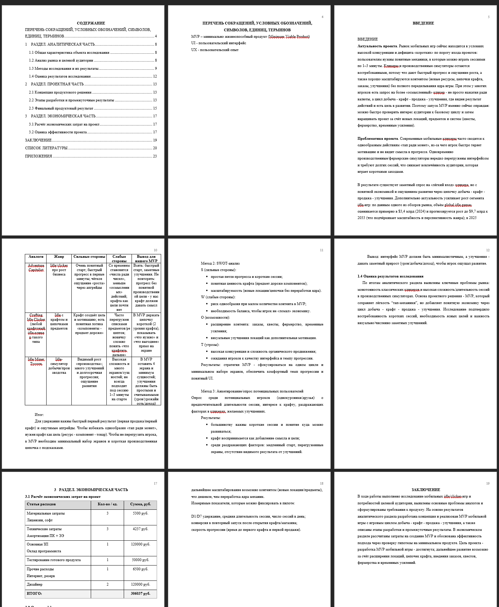
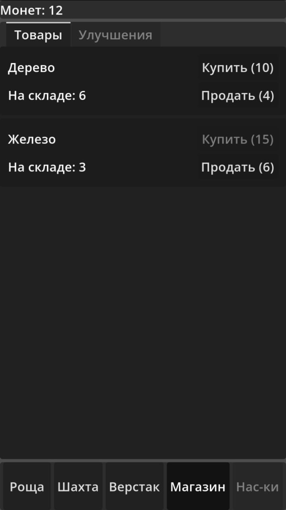
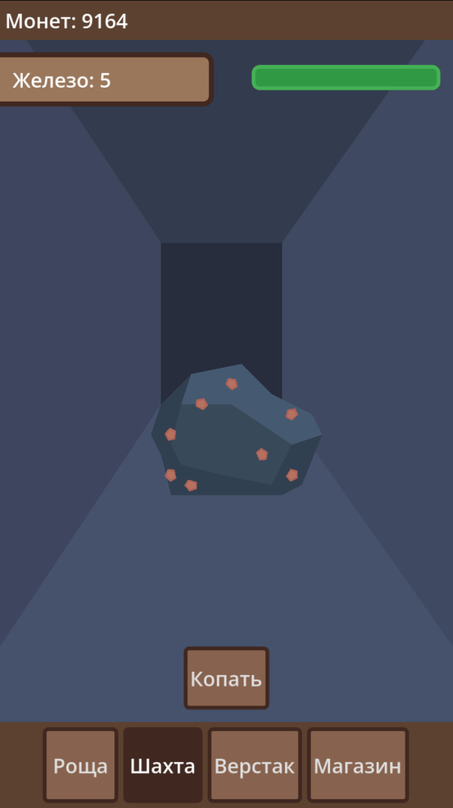
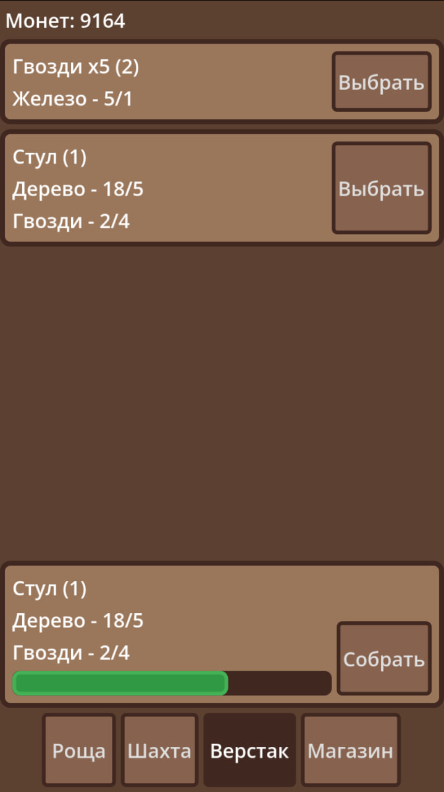

Формирование концепции проекта
Март 2026
Команда провела исследование рынка мобильных idle-игр и определила основные проблемы существующих проектов. Было принято решение создать кликер с элементами крафта и производственного цикла, который будет удобен для коротких игровых сессий.

Проектирование механик и интерфейса
Апрель 2026
Разработана структура MVP. Определены основные локации: Роща, Шахта, Верстак и Магазин. Созданы первые прототипы экранов и проработана игровая экономика. Были описаны механики добычи ресурсов, крафта предметов и системы улучшений.

Создание MVP и тестирование
Май 2026
Завершена реализация базового прототипа игры. Игрок получил возможность добывать ресурсы, создавать предметы, продавать их и покупать улучшения. Проведено первичное тестирование, выявлены ошибки баланса и интерфейса, после чего внесены необходимые исправления.

Подготовка финальной версии проекта
Июнь 2026
Подготовлена документация проекта, проведена оценка результатов работы сформированы предложения по дальнейшему развитию игры. MVP успешно реализует полный игровой цикл и готов к дальнейшему расширению функциональности.